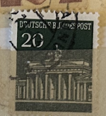
| SOURCE | TITLE| IMAGE MATCH | click to source page |
| eBay | Germany Postage Stamp 1966 Brandenburger Tor Gate 20 Pfg Canceled Used | eBay | 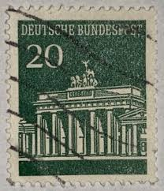 |
| eBay | Berlin Postage Stamps for sale | eBay | 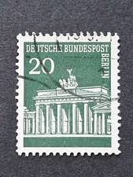 |
| Stampedia | stampedia GERMANY STAMP catalog | 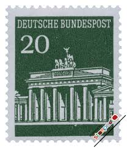 |
| eBay | West Germany - 1966 - Brandenburger Tor - 20Pfg - Used - #02 | eBay | 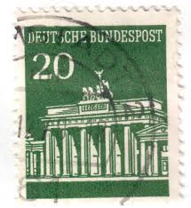 |
| Find Your Stamps Value | BERLIN - Brandenburg Gate Type of Germany 50pf Dark blue stamp price, value | 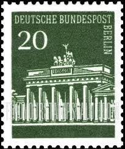 |
| Amazon.com | Amazon.com: FRD (FR.Germany) Hbl18 unmounted Mint/Never hinged ** MNH 1968 Brandenburg Tor (Stamps for Collectors) : Toys & Games | 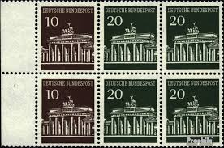 |
| Stamp Community Forum | Need Help With Marking On Back Of Stamp And An Unknown Cancel - Stamp Community Forum | 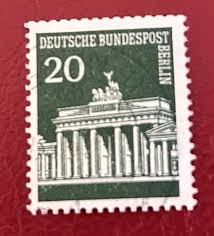 |
| eBay.de | Berlin 1966 Satz 286/90 (287 DZ) Eckrander Brandenburger Tor postfrisch | eBay.de | 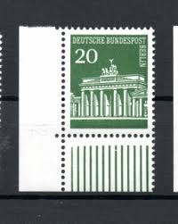 |
| eBay | Machine Cancel Austrian Stamps for sale | eBay | 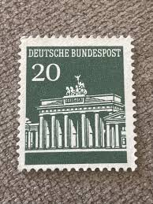 |
| Colnect | Stamp: Brandenburg Gate, Berlin (Germany, Federal Republic(Brandenburg Gate) Mi:DE 507v,Sn:DE 953,Yt:DE 369,Sg:DE 1413,AFA:DE 1457,Un:DE 369 📮 | 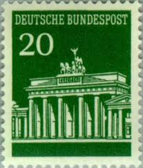 |
| HipStamp | Germany 929 Used - 20pf Brandenburg Gate - 1965 | Europe - Germany & Colonies - Germany, General Issue Stamp / HipStamp | 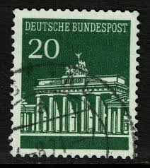 |
| Dreamstime.com | 3,080 Stamp 1966 Stock Photos - Free & Royalty-Free Stock Photos from Dreamstime - Page 11 | 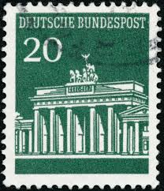 |
| Todocolección | alemania federal. celebridades. schiller. 1961- - Buy Antique stamps of Germany on todocoleccion | 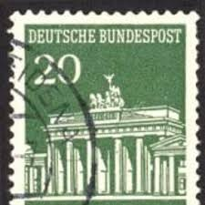 |
| Dreamstime.com | 985 Letter Stamp Berlin Stock Photos - Free & Royalty-Free Stock Photos from Dreamstime | 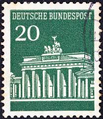 |
| Stamp missing perforation on top edge? | 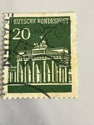 | |
| The Itty Bitty Stamp Company | Germany Scott # 953a Germany Mint NO GUM Tete Beche Pair – The Itty Bitty Stamp Company | 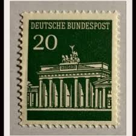 |
| Amazon.ca | Berlin (West) 287wP Horizontal Couple unmounted Mint/Never hinged ** MNH 1966 Brandenburg Tor (Stamps for Collectors), Printing & Stamping - Amazon Canada | 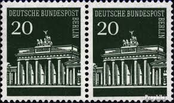 |
| eBay | Postkarte Insel Mainau Tulpen Ufergarten See 08.07.1971 gel_2 | eBay | 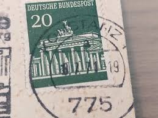 |
| iStock | German Stamp Shows Brandenburg Gate Berlin Stock Photo - Download Image Now - Germany, Postage Stamp, 1966 - iStock | 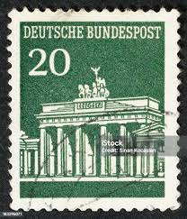 |
| Shutterstock | 8+ Thousand Postal Item Royalty-Free Images, Stock Photos & Pictures | Shutterstock | 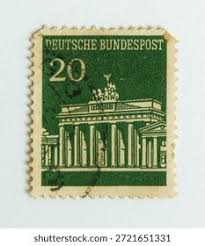 |
| Shutterstock | Singapore July 11 2017 Stamp Printed Stock Photo 674927608 | Shutterstock | 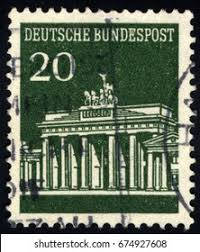 |
| Shutterstock | 18+ Thousand Vintage From German Stamps Royalty-Free Images, Stock Photos & Pictures | Shutterstock | 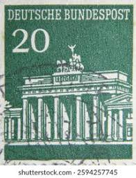 |
| Shutterstock | Deutsch Mark: Over 3,393 Royalty-Free Licensable Stock Photos | Shutterstock | 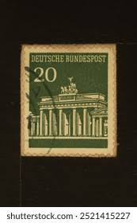 |
| Todocolección | sello aleman, deutsche bundespost, 20, branden - Acheter Timbres anciens d'Allemagne sur todocoleccion | 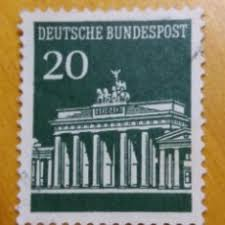 |
| Poppe Stamps | Poppe Stamps: West Berlin, 1966, B281, Gates, Statues And Monuments, Gates, Statues And Monuments - stamps for sale by theme and country | 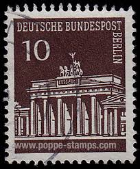 |
| Nummusphila | Germany 1966 - Michel n. 507 v R - Definitive | 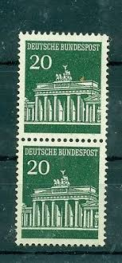 |
| Mystic Stamp | 9N120A - 1963 Berlin - Mystic Stamp Company | 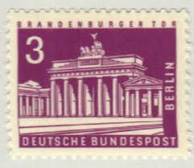 |
| Dreamstime.com | GERMANY - CIRCA 1966: a Postage Stamp from Germany, Showing the Brandenburg Gate in Berlin. Brown Editorial Image - Image of mark, german: 215684810 | 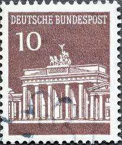 |
| eBay | 1966 Berlin. Brandenburg Gate. | eBay | 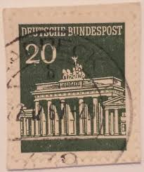 |
| Osta | Saksamaa " BRANDENBURGER TOR " 1967 (247538325) - Osta.ee | 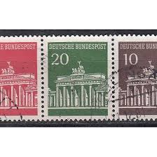 |
| Shutterstock | Karnal Haryana India -august 6th 2025-closeup Stock Photo 2671842151 | Shutterstock | 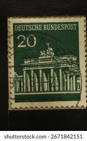 |
| Shutterstock | Commemorating German Postage Stamp: Over 4,332 Royalty-Free Licensable Stock Photos | Shutterstock | 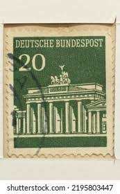 |
| Bid Inside Auctions | Federal Republic of Germany - Auctions - Dr. Reinhard Fischer | 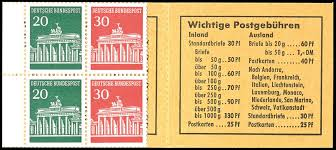 |
| Lychnostatis | Αρχική | Lychnostatis.gr | 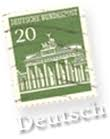 |
| eBay | FR Germany 507R with counting number MNH 1966 Br | eBay | 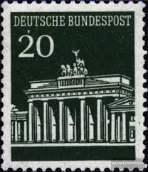 |
| Bob Shop | Germany & Colonies - GERMANY BUNDESREPUBLIK BLOCK OF 4 FROM BOOKLET F.U. LOOK SCAN was sold for 5.00 on 27 Nov at 20:31 by uluzawk in Winterton (ID:628990272) | 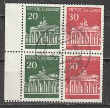 |
| Dreamstime.com | Isolated German Stamp editorial stock photo. Image of historic - 381448723 | 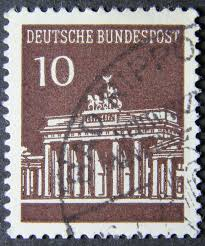 |
| eBay | 1966 GERMANY Brandenburger Deutsche Bundespost Stamp 20pf Actual Stamp TKS80* | eBay | 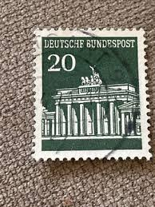 |
| HipStamp | Germany Scott 952-956 used 1966-1968 stamp set | Europe - Germany & Colonies - Germany, General Issue Stamp / HipStamp | 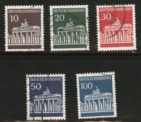 |
| eBay | GERMANY-USED STAMP, 20 pf - ERROR, MOVED PERFORATION - Brandenburg gate-1966/68 | eBay | 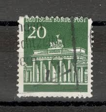 |
| eBay | 1966, Berlin, 287 DZ, ** - 2115576 | eBay | 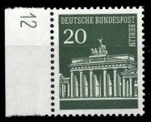 |
| eBay | Germany Federal 1966, Stamp 369 Obliterated, Rfa , Brandenburg Landwehr VF | eBay | 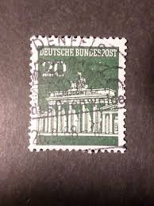 |
| Poppe Stamps | Poppe Stamps: West Berlin, 1956, B133, Buildings, Statues And Monuments - stamps for sale by theme and country | 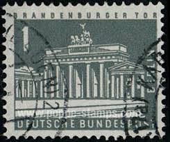 |
| Dreamstime.com | 147 Tor Paper Stock Photos - Free & Royalty-Free Stock Photos from Dreamstime | 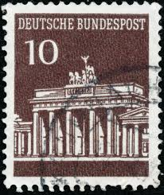 |
| Free stamp catalogue | Stamp 1962, Germany, Berlin Definitive 1v, fluorescend paper, 1962 - Collecting Stamps - Freestampcatalogue.com - The free online stampcatalogue with over 500.000 stamps listed. | 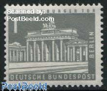 |
| Shutterstock | Hungary Circa 1959 Stamp Printed By Stock Photo 96513424 | Shutterstock | 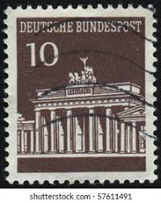 |
| eBay | Germany 1966-68 20pf BRANDENBURG GATE SC 953 MNH | eBay | 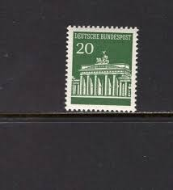 |
| eBay | WEST GERMANY # 952c BRANDENBURG GATE BERLIN LANDMARK | eBay | 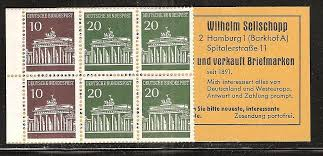 |
| Dreamstime.com | 296 Wonderful Colourful Postage Stamps Stock Photos - Free & Royalty-Free Stock Photos from Dreamstime - Page 2 | 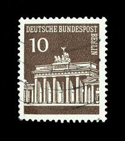 |
| Amazon.co.uk | Prophila Collection Bizonal (Allied Cast) 101D unilateral mischzähnung 11:11:11:11,5 with hinge 1948 Help Berlin (Stamps for collectors) : Amazon.co.uk: Toys & Games | |
| eBay | Germany Berlin 1966-70 20pf BRANDENBURG GATE SC 9N252 MNH | eBay | |
| Shutterstock | 2+ Thousand Country Briefing Royalty-Free Images, Stock Photos & Pictures | Shutterstock | |
| eBay | GERMANY BERLIN STAMP MNH [SALE] [Choose 10pc of MINT is $3.5] unused WM1048 | eBay | |
| eBay | D6603.04] BRD, Germany, Twin Pair 1966 MNH** Brandenburger Gates | eBay | |
| eBay | FR Germany K8 MNH 1968 Brandenburg Tor | eBay | |
| eBay | Berlin Joint Print No. W45 Mint (AD 133) | eBay | |
| Amazon.com | Amazon.com: FRD (FR.Germany) W25 unmounted Mint/Never hinged ** MNH 1967 Brandenburg Tor (Stamps for Collectors) : Toys & Games | |
| eBay | Joint Issue W26 Mint** (AD 882) | eBay | |
| eBay | WEST BERLIN # 9N120 MNH BRANDENBURG GATE | eBay |